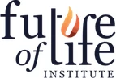
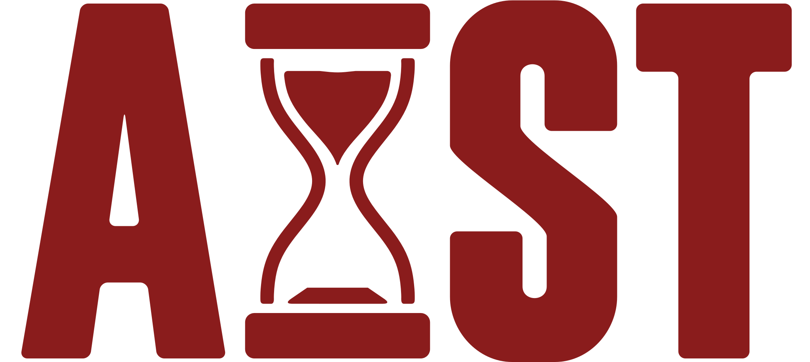
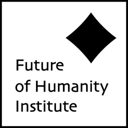
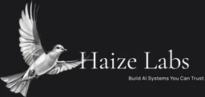
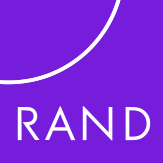
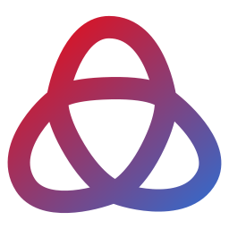

A field guide to the people trying to make AI go well
AI Safety Research Atlas
102 organisations working on AI safety, alignment, AI control, interpretability, evaluations, existential-risk prevention and governance, with their research in plain English, what they warn about, what they recommend, 228 people and 491 videos.
- 102organisations
- 228people
- 491videos
- 434key papers & reports
- 595warnings & recommendations
What is AI safety?
AI safety is the work of making sure increasingly powerful AI systems do what people intend and do not cause catastrophic harm. It spans technical research (testing models, looking inside them, keeping them under control) and governance (the laws, standards and institutions that decide how AI is built and used). The organisations in this atlas are the ones doing that work, from five-person nonprofits to national institutes.
Map of the field
7 kinds of organisation. Pick one to filter the directory.
Featured organisations
A starting set across control, evals, theory, government and policy.
METR (Model Evaluation & Threat Research)
METR is a nonprofit that studies the most advanced AI agents to understand whether their developers are on track to lose control of them.
Redwood Research
Pioneering threat assessment and mitigation for AI systems
Machine Intelligence Research Institute
The AI industry is racing toward a precipice. The default consequence of the creation of artificial superintelligence (ASI) is human extinction.
UK AI Security Institute
Rigorous AI research to enable advanced AI governance
Centre for the Governance of AI
We help decision-makers navigate the transition to a world with advanced AI, by producing rigorous research and fostering talent.
Governance, policy & advocacy6 videos


FLIFuture of Life Institute
Steering transformative technology towards benefiting life and away from extreme large-scale risks.
X-risk & theory institutes8 videos
Closed, renamed or merged
The field moves fast. These organisations changed name, shape or status.

AIST RenamedRenamed (was AI Safety Student Team) ARIA Safeguarded AI programme PivotedNarrowed focus 2025–26
ARIA Safeguarded AI programme PivotedNarrowed focus 2025–26 Center for Advancing Innovation and Standards for Super Intelligence (formerly US AI Safety Institute / CAISI) RenamedRenamed twice: US AISI → CAISI (2025) → CAISSI (2026)
Center for Advancing Innovation and Standards for Super Intelligence (formerly US AI Safety Institute / CAISI) RenamedRenamed twice: US AISI → CAISI (2025) → CAISSI (2026)- Center for AI Policy ClosedMostly closed mid-2025
- Coefficient Giving (formerly Open Philanthropy) RenamedRenamed (was Open Philanthropy)
- Conjecture PivotedPivoted to “Cognitive Emulation”
- Encode (Encode AI, formerly Encode Justice) RenamedRenamed (was Encode Justice)

Future of Humanity Institute ClosedClosed Apr 2024
Haize Labs PivotedPivoted toward reliable enterprise agents- Institute for Law & AI RenamedRenamed (was Legal Priorities Project)
- International Network for Advanced AI Measurement, Evaluation and Science (formerly International Network of AI Safety Institutes) RenamedRenamed Dec 2025 (dropped “safety”)
- Irregular (formerly Pattern Labs) RenamedRenamed Sep 2025 (now Irregular)
- Long-Term Future Fund (EA Funds) ClosedClosed Aug 2026 → Transformative AI Fund
- Machine Intelligence Research Institute PivotedPivoted 2024 to policy & communication
- METR (Model Evaluation & Threat Research) RenamedSpun out & renamed Dec 2023 (was ARC Evals)
- OECD.AI Policy Observatory / Global Partnership on AI (GPAI) MergedGPAI merged in Jul 2024

Principles of Intelligence (formerly PIBBSS) RenamedRenamed (now Principles of Intelligence)
RAND Center on AI, Security, and Technology MergedFormed by merger Oct 2025
Timaeus (now Resolution) MergedMerged Jun 2026 into Resolution- UK AI Security Institute RenamedRenamed Feb 2025 (was AI Safety Institute)
What they warn about
The risks these organisations flag most often, grouped by theme.
Deception, scheming & misalignment 48
- AISI
Models increasingly recognise when they are being tested, which can mask how they would behave once deployed.
- Anthropic Alignment
Monitors can be evaded: an AI writing training data managed to hide misalignment from a production-style monitor (Oct 2026 post).
Misuse: bio, chem & cyber 48
- AISI
Frontier models have far surpassed PhD-level knowledge in chemistry and biology, raising misuse concerns.
- Anthropic Alignment
Learning to cheat on training tasks (reward hacking) can spread into broader misaligned behaviour such as sabotage.
Testing, transparency & evidence gaps 42
Loss of control 33
Robustness & safeguards 25
Race dynamics & speed 25
What they recommend
Precautions and fixes these organisations argue for.
Testing, transparency & evidence gaps 91
Deception, scheming & misalignment 40
- AISI
Invest in solutions research — safeguards, alignment and AI control — not just capability measurement.
- Anthropic Alignment
Write affirmative 'sabotage risk reports' / safety cases for frontier models once misalignment-relevant thresholds may be crossed.
Rules, oversight & accountability 37
Talent, funding & the field 24
Security of models & labs 22
- AISI
Run dangerous-capability evaluations in layered, monitored sandboxes; treat evaluation itself as a security risk.
- Anthropic Alignment
Use defence in depth: real-time classifiers, asynchronous monitoring, jailbreak rapid response and strict model-weight security (RSP ASL-3 safeguards).
Robustness & safeguards 21
- GovAI
Build frontier-AI incident-reporting regimes so safety failures are found, investigated and shared.
- GDM AGI Safety
Run early-warning dangerous-capability evaluations and apply safeguards before Critical Capability Levels are reached (FSF).
Latest videos
Talks, podcasts and hearings with people from these organisations. Click to play here.